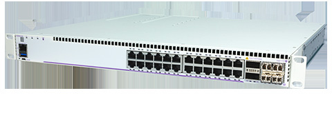

bp-os6860-datasheet

R（触发场景）
- 中大型园区边缘、汇聚层、小企业核心、DC GbE 服务器接入（
<span class="pg">原文p82</span>四定位） - Wi-Fi 6/7 高密供电：95W bt 口 + 3.4kW 预算规划
- 200G/100G 堆叠与 32x10/25G、16x40G、8x100G VC 上联设计
- N 型的 SPB-M / VxLAN VTEP / MPLS（许可）fabric 选型；MPLS-1/MPLS-4 许可行项
I（核心理念）
- OS6860 是接入旗舰："high-speed flexible uplinks, 200G stacking, industry leading 95W PoE... The first in the industry to offer application monitoring and visibility for network analytics"（
<span class="pg">原文p82</span>）。 - 三档产品线：Enhanced（E，4x10G SFP+ + 60/75W）→ Advanced（N，4x25G SFP28 + 95W）→ Premium（N，模块化上联 4x10/4x25/2x40/1x100G）。
- 层级：企业接入最高档兼汇聚，上接 6870/6900。
A1（与相邻系列选型差异）
- vs OS6560：6560 6x10G 上联 + 20G 堆叠 + 1645W； 6860 100G 上联 + 200G 堆叠 + 3.4kW + 95W 全口（N）+ SPB/VxLAN/MPLS——预算够且要 Wi-Fi 6 旗舰供电/fabric 时升 6860。
- vs OS6870：6870 是 OmniFabric 三合一（SPB+VxLAN-EVPN+MPLS 统一框架，256bit MACsec 全端口含用户口）； 6860N 的 MPLS 需按节点买许可、MACsec 256bit 限上联口。
- vs OS6900：6860 定位边缘/汇聚；6900 是固定核心（6.4Tb/s、VC 6 台）。
A2（规格细节速查表）
机型矩阵（ <span class="pg">原文p84</span> / <span class="pg">原文p85</span> 表 1-2）：
Enhanced（E）：
| 型号 | 用户口 | 上联 | 电源 | PoE（1 PS/2 PS） |
|---|---|---|---|---|
| OS6860E-24/-P24 | 24（P：20 PoE+ + 4x60W） | 4x1/10G SFP+ MACsec | BP/BP-D（非 PoE）；BP-PH | 450W/900W |
| OS6860E-48/-P48 | 48（P：44 PoE+ + 4x60W） | 4x SFP+ | BP-PX | 750W/1500W |
| OS6860E-P24Z8 | 16 PoE+ + 4x75W 多千兆 | 4x SFP+ | BPPH/BPPX | 450/900、750/1500W |
Advanced/Premium（N，全部 PoE 口 802.3bt）：
| 型号 | 用户口 | 上联 | PoE（1 PS/2 PS） |
|---|---|---|---|
| OS6860N-U28 | 24x100/1000 SFP + 4 combo | 4x SFP+ + 4x SFP28 1/10/25G | — |
| OS6860N-P24Z | 12x60W + 12x95W 多千兆 | 4x SFP28 MACsec | 415/960（BPPH）、750/1545W（BPPX） |
| OS6860N-P48Z | 36x60W + 12x95W 多千兆 | 4x SFP28 | 360/900、660/1500W |
| OS6860N-P24M | 24x95W 多千兆（含 10G 口） | 模块化插槽 | 385~1660W |
| OS6860N-P48M | 36x2.5G 95W + 12x2.5/5/10G 95W MACsec | 模块化插槽 | 最高 3390W@230VAC（双 BPXL） |
上联与堆叠：E 型 2x QSFP+ VC 口（42/84 Gb/s）；N 型 2x100G QSFP28 VC 口（200/400 Gb/s 聚合）；VC 8 台 → 32x10/25G、16x40G、8x100G 上联、384 多千兆口（ <span class="pg">原文p83</span> / <span class="pg">原文p87</span> ）；premium 上联模块 OS68-XNI-U4（4x10G）/VNI-U4（4x25G）/QNI-U2（2x40G）/CNI-U1（1x100G），全 256bit MACsec（ <span class="pg">原文p86</span> 表 4）。
交换容量与包转发（ <span class="pg">原文p86</span> ）：E 型 208~264 Gb/s（154.9~190.6 Mpps）；N 型 728~1120 Gb/s（541.7~803.5 Mpps）。
电源体系（ <span class="pg">原文p87</span> / <span class="pg">原文p88</span> ）：1+1 热插拔负载分摊，换电不断业务；E 型 BP 150W/BP-D DC/BP-PH 600W/BP-PX 920W（最高 1500W）；N 型 BPPH 600W/BPPX 920W/BPXL 2000W（仅 premium，3390W 双配需 200-240VAC，100-120V 只有 1570W）；E 与 N 的 PoE 电源不通用（ <span class="pg">原文p87</span> ）。
Layer 特性：完整动态路由内置（OSPFv2/v3、IS-IS、BGP、VRF、PIM 全家， <span class="pg">原文p89</span> ）；SPB-M + 硬件 VxLAN VTEP（ <span class="pg">原文p83</span> / <span class="pg">原文p90</span> ）；MPLS（VPLS/LDP/BGP L2VPN）仅 N 型且需 OS6860N-MPLS-1/-4 许可（ <span class="pg">原文p83</span> / <span class="pg">原文p96</span> ）；MACsec 上联口 256bit（免费站点许可 OS-SW-MACSEC）；E 型 64K IPv4 路由 / N 型 144K IPv4 + 72K IPv6（ <span class="pg">原文p86</span> / <span class="pg">原文p87</span> ）。
硬件平台：E 型 2GB RAM/2GB flash；N 型 4GB DRAM/16GB flash；EMP 带外管理口全系（ <span class="pg">原文p84</span> / <span class="pg">原文p86</span> ）。
功耗/环境（ <span class="pg">原文p92</span> ）：待机 38.9~166.8W；0~45°C；噪音 42~52 dBA；MTBF 121k~354k 小时；FIPS 140-2/CC EAL2/NDcPP/JITC/TAA 联邦认证（ <span class="pg">原文p93</span> ）。
规格红线：3.4kW 仅 P48M/P24M 双 BPXL@230V；MPLS 仅 N 型 + 许可；E 型 MACsec 60/75W 口有限。
E（适用场景）
- Wi-Fi 6/7 高密楼层 + 全 bt 供电：P48Z/P24M/P48M（95W 全口，12 口到 10G 多千兆）
- 汇聚/小核心：VC 8 台 + 100G 上联 + ISSU（医院/生产网业务连续，对照 C10）
- DC 边缘：SPB + VxLAN VTEP + OpenFlow/OpenStack SDN（
<span class="pg">原文p83</span>） - 需要把多站点 LAN 经运营商 MPLS 连通：N 型 + MPLS-1/-4 许可（
<span class="pg">原文p83</span>） - 供电天花板场景：双 BPXL 3.4kW（注意市电 230V 前提）
B（限制与坑）
- 3390W 档仅 230VAC：115V 市电（美/日）双 BPXL 也只有 1570W（X22，
<span class="pg">原文p85</span>/<span class="pg">原文p88</span>） - BPXL 仅限 premium 型号（P48M/P24M），且 100-120VAC 输出降为 1000W（
<span class="pg">原文p87</span>） - E 型与 N 型 PoE 电源不通用（"cannot be used interchangeably"，
<span class="pg">原文p87</span>）——扩容/备件勿混订 - MPLS 仅 N 型且需按节点许可（MPLS-1 单节点/MPLS-4 四节点同站点，
<span class="pg">原文p96</span>）；MACsec 站点许可免费但要申请（OS-SW-MACSEC） - N 型 48 口深 44cm（P48M/P48Z）——机柜深度核对（
<span class="pg">原文p85</span>） - E 型 PoE 型 MTBF 低至 121k 小时（
<span class="pg">原文p92</span>）——冗余电源必配
来源：bp-omniswitch-datasheets DOC 10（p82-98，MPR00289621EN March 2025）；verified.md C10/C11/P11/P12/X20/X22/F3/F4/F5